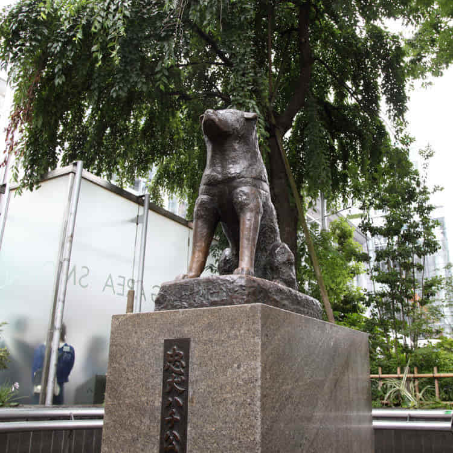
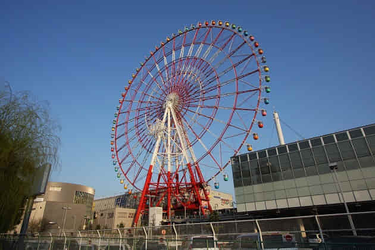

도쿄를 대표하는 상업지구 가운데 하나. 철도가 들어서면서 교통의 중심이 되었고, 유명 백화점이 우후죽순 들어서면서 자연스레 상권이 크게 발달했다. 최근에는 유니크한 매장과 분위기 있는 카페와 레스토랑 등이 생겨나면서 구름 떼 같은 여행자를 불러모으고 있다. 대표적으로 시부야 109, 마크시티 등이 있다. 이곳이 유명세를 탄 가장 큰 이유는 스크램블 교차로로 불리는 초대형 횡단보도. 이곳이 한눈에 내려다보이는 주변 건물은 자연스레 여행자가 몰리는 명당이 되었다.

하치코 동상
센터거리
요오기공원
오타쿠의 성지로 불리는 장소. 아키하바라는 70~80년대까지 세계에서 가장 유명한 전자제품 거리 가운데 하나였다. 지금은 전자제품보다는 캐릭터 상품과 애니메이션, 각종 코스튬 매장, 독특한 성인용품 매장, 아이돌 상품 매장, 개성 넘치는 만화방 등이 들어서면서 제2의 전성기를 구가하는 중이다. 기상천외한 볼거리가 가득하기에 마니아는 물론 일반 여행자도 시간 가는 줄 모르고 주변 상점을 기웃거리게 된다.
만다라케
메이드카페
아키바카트
라디오회관
도쿄 북부에 자리한 명소. 도쿄 시민이 신성시 여기는 지역이라고도 볼 수 있다. 도쿄 최대 규모의 사찰인 센소지와 기미나리몬, 전통 거리 등은 ‘클래식 도쿄’의 진수를 보여준다. 이러한 분위기에 맞춰 실제로 전통 인력거에 오르거나 기모노를 입고 사진을 찍는 여행자도 상당히 많다. 제일 먼저 센소지를 둘러본 뒤, 주변 도쿄 스카이트리 타워나 우에노 공원 등으로 향하는 동선도 추천한다. 주변에 개성 넘치는 상점과 맛집이 즐비해 여행자에게 선택지가 많은 편이다.
카미나리몬
센소지
스카이트리
도쿄 남단, 도쿄베이 지역에 세워진 계획 지구. 이곳에 자리한 자유의 여신상과 레인보우 브리지, 그리고 건담 조형물과 만나기 위해 온종일 수많은 여행자가 오다이바로 향한다. 이왕이면 도쿄의 다른 지역을 관광하고 일몰 무렵에 찾는 것을 추천한다. 아름다운 노을과 사진이 가장 잘 나온다는 일몰 직후의 매직아워, 그리고 분위기 있는 야경을 모두 만날 수 있기 때문이다. 주변에 분위기 있는 카페와 레스토랑, 쇼핑몰이 있어 함께 둘러보는 것을 추천한다.
자유의 여신상

19.7m 건담
오오에도 온천

관람차
도쿄의 상징이자 관광 명소로서 널리 알려져 있다. 한동안은 일본 도쿄도에서 가장 높은 건축물이었으나, 2012년 근처에 634m의 도쿄 스카이 트리가 건설되면서 두 번째로 높은 건축물이 되었다.
도쿄 디즈니 랜드에는 각기 다른 테마로 나뉜 구역이 일곱 개 있고 그것들을 「테마랜드」라고 부른다. 각 테마랜드에 배치되는 어트랙션이나 물건 파는 상점, 음식점 및 장식류는 각 테마에 맞춰서 이미지가 통일되게 도모되고 있다. 원내의 시설은 어트랙션이외의 설비또한 모두 OCL직영이다. 파크 내에는 숍, 레스토랑, 서비스시설이 다수 존재한다.